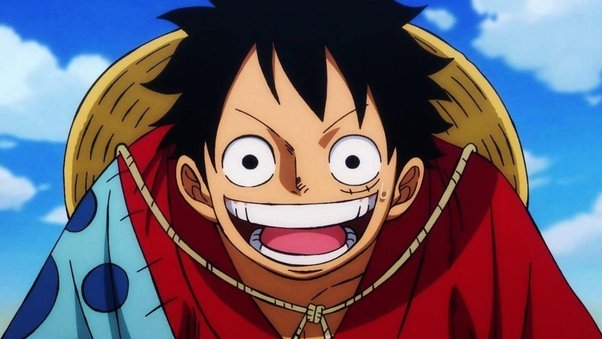

One Piece
One Piece is the name the world gave to all the treasure gained by the Pirate King Gol D. Roger. At least a portion of it once belonged to Joy Boy during the Void Century.The treasure is said to be of unimaginable value, and is currently located on the final island of the Grand Line: Laugh Tale.
Writer
Eiichiro Oda

Consistent quality and work ethic
According to both himself and his editors, Oda is an ardent worker and perfectionist. By his own estimation, he sleeps only three hours per day during a typical work week.
Foreshadowing
Oda, the creator of One Piece, is well known for his masterful use of foreshadowing.
Unique and creative storytelling
Oda is known for his intricate and imaginative world-building, compelling characters, and engaging plotlines that keep readers hooked.
Cultural relevance and impact
"One Piece" has become one of the most successful manga series of all time, with over 480 million copies sold worldwide and a massive fanbase that transcends cultural and linguistic barriers.
StrawHats
Straw Hat Crew

Captian

Monkey D. Luffy, also known as "Straw Hat Luffy" and commonly as "Straw Hat",is the founder and captain of the increasingly infamous and powerful Straw Hat Pirates, as well as the most powerful of its top fighters. He desires to find the legendary treasure left behind by the late Gol D. Roger and thereby become the Pirate King,[28] which would help facilitate an unknown dream of his that he has told only to Shanks, his brothers, and crew.He believes that being the Pirate King means having the most freedom in the world.
Swords-men
Roronoa Zoro,also known as "Pirate Hunter" Zoro,is a main combatant of the Straw Hat Pirates, one of their two swordsmen, one of the Senior Officers of the Straw Hat Grand Fleet,and is publicly recognized as the right-hand man of his crew's captain Monkey D. Luffy.Formerly a bounty hunter,he is the second member of Luffy's crew and the first to join it
Cook
"Black Leg" Sanji, born as Vinsmoke Sanji, is the cook of the Straw Hat Pirates and one of the Senior Officers of the Straw Hat Grand Fleet. He is the fifth member of the crew and the fourth to join,